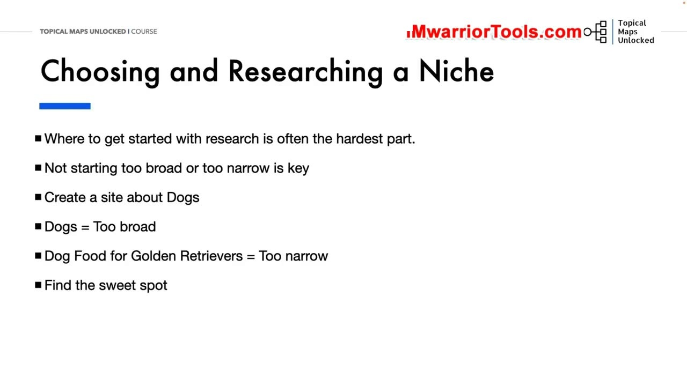
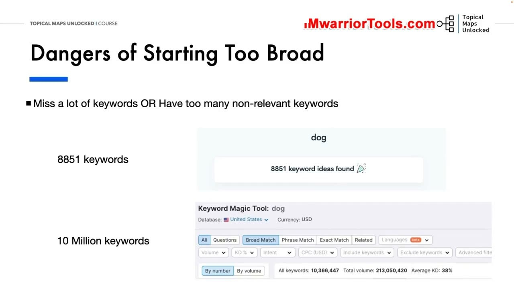
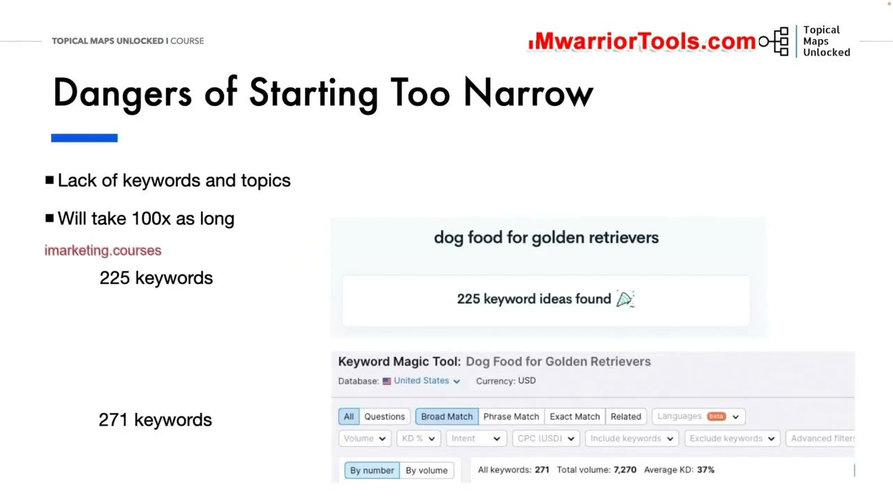
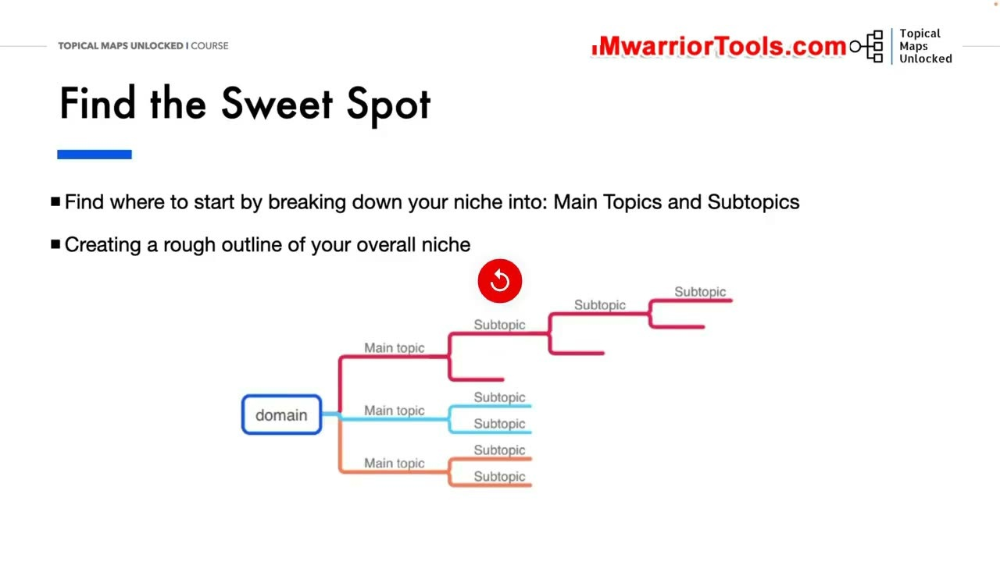

Choosing a Niche and Starting Point
1. Thách thức khi bắt đầu nghiên cứu ngách: Quá rộng hay Quá hẹp?
Bắt đầu nghiên cứu ngách (Niche Research) luôn là giai đoạn khó khăn và dễ gây nản lòng nhất đối với bất kỳ ai bắt tay vào xây dựng website. Nguyên tắc cốt lõi mang tính sống còn được Yoyao nhấn mạnh ngay từ đầu: Tuyệt đối không bắt đầu quá rộng (too broad), nhưng cũng không được bắt đầu quá hẹp (too narrow).
Ví dụ minh họa thực tế:
- Nếu bạn chọn xây dựng một website về
Dogs(Loài chó nói chung): Đây là một ngách quá rộng lớn, mênh mông và có hàng triệu trang đối thủ sừng sỏ. - Nhưng nếu bạn thu hẹp ngay lập tức thành
Dog Food for Golden Retrievers(Thức ăn cho chó Golden Retriever): Đây lại là một ngách quá hẹp, giới hạn tiềm năng phát triển và khiến bạn nhanh chóng cạn kiệt ý tưởng nội dung sau vài chục bài viết.
Nhiệm vụ của người làm SEO là phải tìm ra "Sweet Spot" (Điểm cân bằng lý tưởng): Đủ cụ thể để nhanh chóng xác lập thẩm quyền chuyên môn, nhưng cũng đủ rộng để mở rộng quy mô kinh doanh lâu dài.

2. Hiểm họa khi bắt đầu quá rộng: Bị chôn vùi trong 10 triệu từ khóa
Để chứng minh hiểm họa của việc bắt đầu quá rộng, Yoyao phân tích dữ liệu thực tế khi gõ từ khóa dog vào công cụ nghiên cứu từ khóa:
- Công cụ trả về hơn 8.851 cụm ý tưởng từ khóa khác nhau.
- Tổng khối lượng dữ liệu khổng lồ lên tới hơn 10 triệu từ khóa liên quan hỗn tạp!
Khi đối mặt với biển dữ liệu 10 triệu từ khóa, người làm SEO sẽ rơi vào hai cái bẫy nguy hiểm: Hoặc là bạn sẽ vô tình bỏ sót hàng ngàn từ khóa ngách quý giá vì bị phân tâm bởi các từ khóa ngắn có dung lượng cao; hoặc bạn sẽ bị choáng ngợp bởi hàng vạn từ khóa rác hoàn toàn không liên quan đến mục tiêu thương mại của website. Việc phân loại một tệp dữ liệu khổng lồ như vậy sẽ tiêu tốn hàng tháng trời mà không mang lại cấu trúc mạch lạc.

3. Cạm bẫy khi bắt đầu quá hẹp: Cạn kiệt từ khóa và tốn thời gian gấp 100 lần
Ngược lại, nếu bạn rơi vào thái cực đối lập khi chọn ngách quá hẹp như dog food for golden retrievers:
- Dữ liệu nghiên cứu chỉ trả về đúng 225 cụm ý tưởng và vỏn vẹn 271 từ khóa mục tiêu.
Hậu quả nhãn tiền là bạn sẽ nhanh chóng rơi vào tình trạng thiếu hụt trầm trọng các chủ đề liên quan để xây dựng độ sâu chuyên môn. Sau khi viết xong vài chục bài viết về thức ăn cho chó Golden, website của bạn sẽ hoàn toàn cạn kiệt dư địa tăng trưởng. Khi muốn mở rộng sang thức ăn cho các giống chó khác, bạn sẽ phải lặp lại toàn bộ quy trình nghiên cứu từ con số không, khiến việc xây dựng website mất thời gian gấp 100 lần so với việc thiết lập một cấu trúc phân cấp bài bản ngay từ đầu.

4. Tìm điểm cân bằng lý tưởng (Sweet Spot) và Phác thảo cấu trúc tổng thể
Giải pháp tối ưu là tìm ra Sweet Spot thông qua phương pháp chia nhỏ có phương pháp:
- Xác định điểm khởi đầu bằng cách phân rã ngách thành các Main Topics (Chủ đề chính) và Subtopics (Chủ đề phụ) rõ ràng.
- Tạo ra một bản phác thảo thô ban đầu (Rough outline) cho toàn bộ ngách trên sơ đồ tư duy trước khi đào sâu vào chi tiết kỹ thuật.
Bằng cách xác định đúng điểm khởi đầu cân bằng, bạn sẽ vừa kiểm soát được khối lượng từ khóa trong tầm tay, vừa đảm bảo website có sẵn một lộ trình phát triển nội dung rộng mở trong tương lai.

Nguồn và đối chiếu
- Topical Maps Unlocked 2.0 · 01-Choosing a Niche and Starting Point (Video bài học chính).
- Đối chiếu ngữ nghĩa với bản tiếng Anh: Bản Tiếng Anh/05-Topical and Keyword Research/01-Choosing a Niche and Starting Point.mp4.